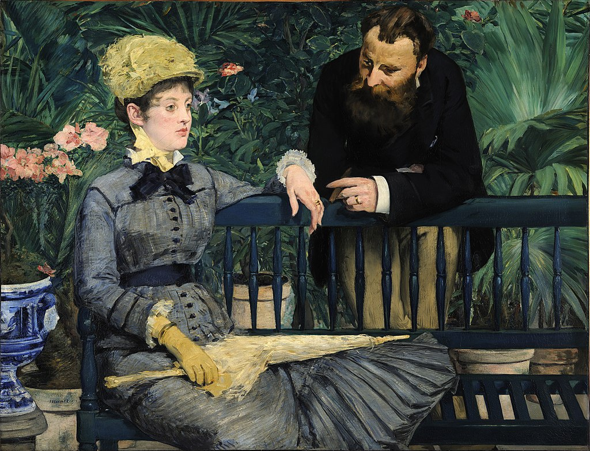

<head>
<meta charset="UTF-8" />
<meta name="keywords" content="drawing, painting" />
<meta name="description" content="drawings by Sunjy" />
<title>Sunjy</title>
<link rel="shortcut icon" type="image/x-icon" href="../../mImages/mCommon/favicon.ico" media="screen" />
<link rel="stylesheet" type="text/css" href="../../mCsses/mCommon/mCssA.css" />
<link rel="stylesheet" type="text/css" href="../../mCsses/mCommon/mCssB.css" />
<link rel="stylesheet" type="text/css" href="../../mCsses/mCommon/mCssC.css" />
<link rel="stylesheet" type="text/css" href="../../mCsses/mCommon/mCssD.css" />
<link rel="stylesheet" type="text/css" href="../../mCsses/mContent/mCssA.css" />
<link rel="stylesheet" type="text/css" href="../../mCsses/mContent/mCssB.css" />
<link rel="stylesheet" type="text/css" href="../../mCsses/mContent/mCssC.css" />
<link rel="stylesheet" type="text/css" href="../../mCsses/mContent/mCssD.css" />
</head>
<script type="text/javascript" src="../../mScripts/mContent/mContentAA.js" /></script>
<script type="text/javascript" src="../../mScripts/mContent/mContentAB.js" /></script>
<script type="text/javascript" src="../../mScripts/mContent/mContentAC.js" /></script>
<script type="text/javascript" src="../../mScripts/mContent/mContentAD.js" /></script>
<script type="text/javascript"></script> 
<script type="text/javascript">
document.write('<div class="mImgAbsolute"></div>');
/*
document.write('<p class="mFontSizeBColor" />From a white paper...</p>');
document.write('<table class="center"><tr><td>');
document.write('');
document.write('</td></tr></table>');
*/
</script>


<script type="text/javascript">
document.write('<p class="mFontSizeBColor" />In the Conservatory</p>');
document.write('<p class="mFontSizeSColor" />By Edouard Manet, 1879. “In the Conservatory” is set in a greenhouse in Paris. It shows a fashionable couple of some social rank. Their married status is conveyed by their rings and the proximity of their hands, which reflects a hint of intimacy.<br><br>The woman is the focus of the portrait, as she is more prominently placed plus her more colorful attire. Their lack of engagement with the viewer creates a sense of detachment.<br><br>The conservatory in this painting was in Paris, which was then owned by painter Otto Rosen. Manet used the greenhouse as a studio from 1878 to 79. The couple was Manet’s friends, the Guillemets, who owned a clothing shop.<br><br>In 1945 during the end of the Second World War, this painting was among the objects evacuated from the Berlin Museums. It was stored for safekeeping into a salt mine in Merkers.<br><br>After the war, the picture was discovered and secured by the Monuments Men. Its salvage was documented in photographs, which show soldiers posing with Manet’s painting in the mine in Merkers.<br><br>Thankfully it survived those challenging times, and it made it’s way back to the first museum to own this masterpiece.</p>');
document.write('<table class="center" /><tr><td>');
document.write('<br>The woman is the focus of the portrait, as she is more prominently placed plus her more colorful attire. Their lack of engagement with the viewer creates a sense of detachment.<br><br>The conservatory in this painting was in Paris, which was then owned by painter Otto Rosen. Manet used the greenhouse as a studio from 1878 to 79. The couple was Manet’s friends, the Guillemets, who owned a clothing shop.<br><br>In 1945 during the end of the Second World War, this painting was among the objects evacuated from the Berlin Museums. It was stored for safekeeping into a salt mine in Merkers.<br><br>After the war, the picture was discovered and secured by the Monuments Men. Its salvage was documented in photographs, which show soldiers posing with Manet’s painting in the mine in Merkers.<br><br>Thankfully it survived those challenging times, and it made it’s way back to the first museum to own this masterpiece." />');
document.write('</td></tr></table>');
</script>


